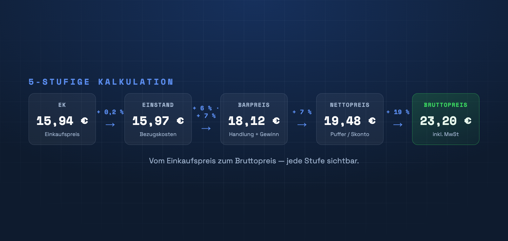

Wer im Onlinehandel Geld verdienen will, muss seine Verkaufspreise sauber kalkulieren – nicht schätzen. Dieser Ratgeber zeigt dir Schritt für Schritt, wie aus einem Einkaufspreis ein tragfähiger Verkaufspreis wird: erst die einfache Faktor-Methode, dann die vollständige 5-stufige Handelskalkulation mit einem konkreten Beispiel.

Warum die richtige Kalkulation zählt
Ein zu niedriger Preis frisst deine Marge, ein zu hoher kostet dich Verkäufe. Zwischen Einkauf und Verkauf liegen aber mehr Kosten, als viele auf dem Schirm haben: Bezugskosten (Fracht, Verpackung), laufende Handlungskosten, dein Gewinnaufschlag, ein Puffer für Skonto und Rabatte – und schließlich die Mehrwertsteuer. Wer diese Positionen sauber einrechnet, kennt seinen Mindestpreis und verkauft nie unter Wert.
Die einfache Methode: der Kalkulationsfaktor
Am schnellsten geht es mit einem Kalkulationsfaktor. Du multiplizierst den Einkaufspreis (EK) mit einer Zahl, die alle Aufschläge zusammenfasst:
Der Vorteil: extrem schnell und über das ganze Sortiment einheitlich. Der Nachteil: Der Faktor ist eine Blackbox – du siehst nicht, welche Kostenposition welchen Anteil hat. Genau dafür gibt es die 5-stufige Kalkulation.
Die 5-stufige Handelskalkulation
Bei der Handelskalkulation baust du den Preis in nachvollziehbaren Stufen auf. Jede Stufe schlägt einen Prozentsatz auf den vorherigen Wert. Am Beispiel eines Einkaufspreises von 15,94 €:
+ 7 %→
1. Einstand (+ Bezugskosten)
Zum reinen Einkaufspreis kommen die Bezugskosten: Fracht, Zoll, Verpackung. So erhältst du den Einstandspreis – den echten Preis, zu dem die Ware bei dir liegt.
2. Barpreis (+ Handlungskosten & Gewinnzuschlag)
Auf den Einstand schlägst du deine Handlungskosten (Miete, Lager, Personal, Software) und deinen Gewinnzuschlag. Das Ergebnis ist der Barpreis.
3. Nettopreis (+ Puffer für Skonto/Rabatt)
Damit gewährte Skonti und Rabatte deine Marge nicht auffressen, kalkulierst du einen Puffer ein. So bleibt der Preis auch nach Nachlass tragfähig – das ist dein Nettopreis.
4. Bruttopreis (+ Mehrwertsteuer)
Zuletzt kommt die Mehrwertsteuer obendrauf. Netto × 1,19 (Normalsatz) bzw. × 1,07 (ermäßigt) ergibt den Bruttopreis – den Preis, den deine Kundschaft sieht.
Mehrwertsteuer richtig einrechnen
Den Steuerbetrag rechnest du auf den Nettopreis auf: Netto × (1 + Steuersatz) = Brutto. Im Beispiel: 19,48 € × 1,19 = 23,20 €. Achte darauf, für jedes Produkt den korrekten Satz (Normal- oder ermäßigter Satz) zu verwenden.
Preise sauber runden
Krumme Endpreise wie 23,17 € wirken unprofessionell. Runde auf saubere Stufen – etwa auf 0,05 €, 0,10 € oder psychologische Schwellen wie x,99 €. Wichtig: immer nach der MwSt runden, damit der Bruttopreis stimmt.
Häufige Fehler
- Nur den Einkaufspreis betrachten und Bezugs-/Handlungskosten vergessen.
- Rabatte und Skonto nicht einkalkulieren – die Marge schmilzt beim ersten Nachlass.
- Netto- und Bruttopreise verwechseln.
- Preise einmal setzen und bei steigenden Einkaufspreisen nicht nachziehen.
Diese Kalkulation – automatisch in Shopify
PriceCalc Pro rechnet genau diese 5 Stufen für jede Produktvariante, schreibt den Preis direkt in Shopify und sichert deine Daten vorher. Einfacher Faktor oder volle Kalkulation – du entscheidest.
PriceCalc Pro ansehen →